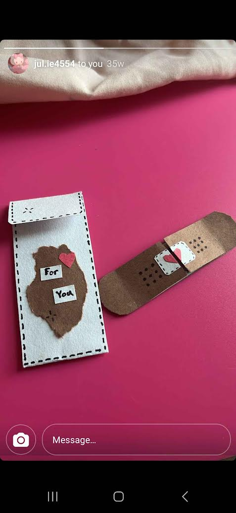
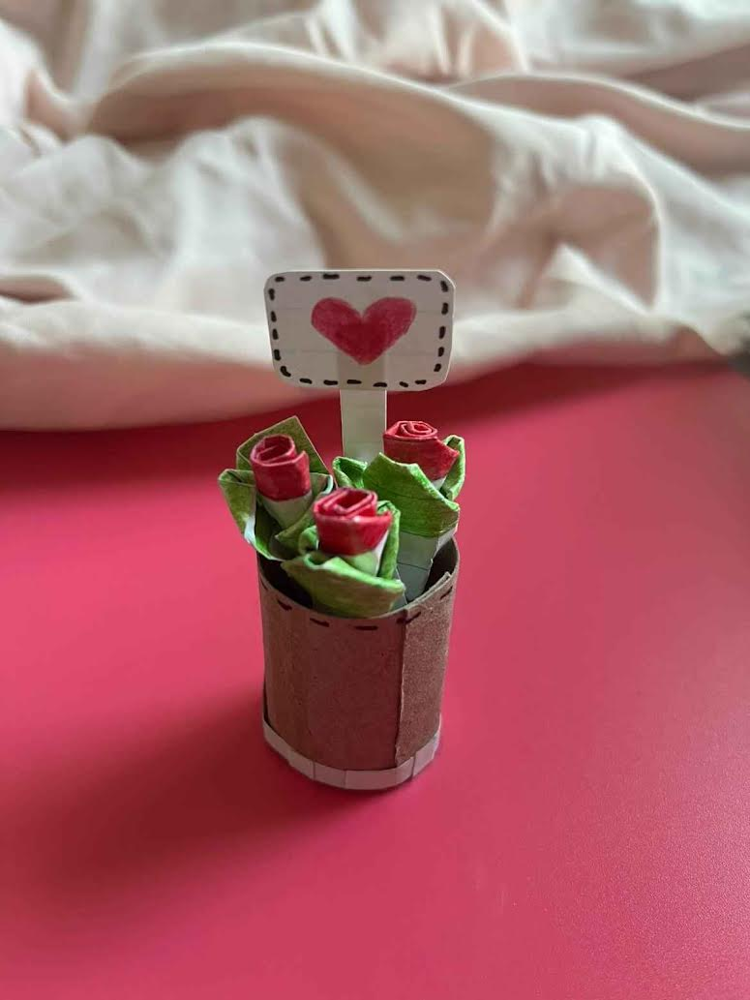
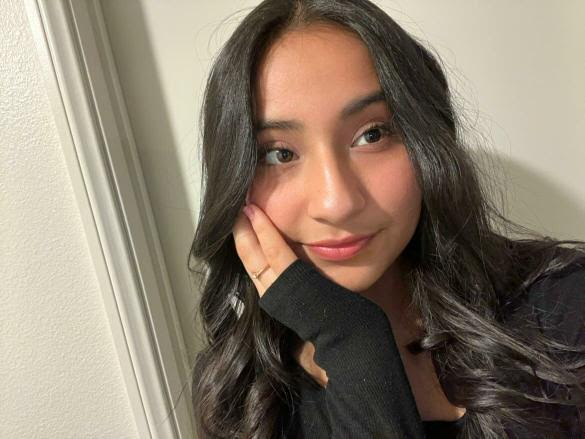
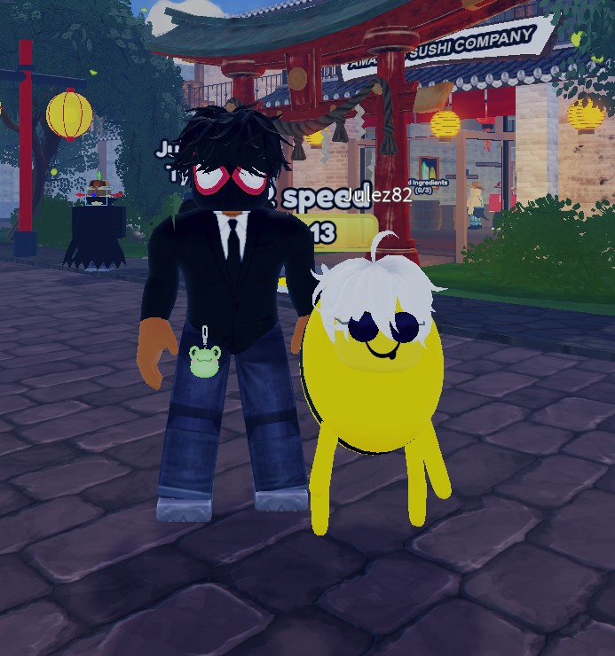
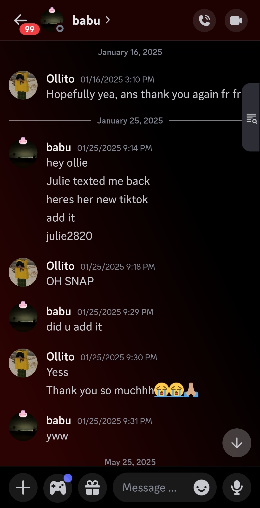
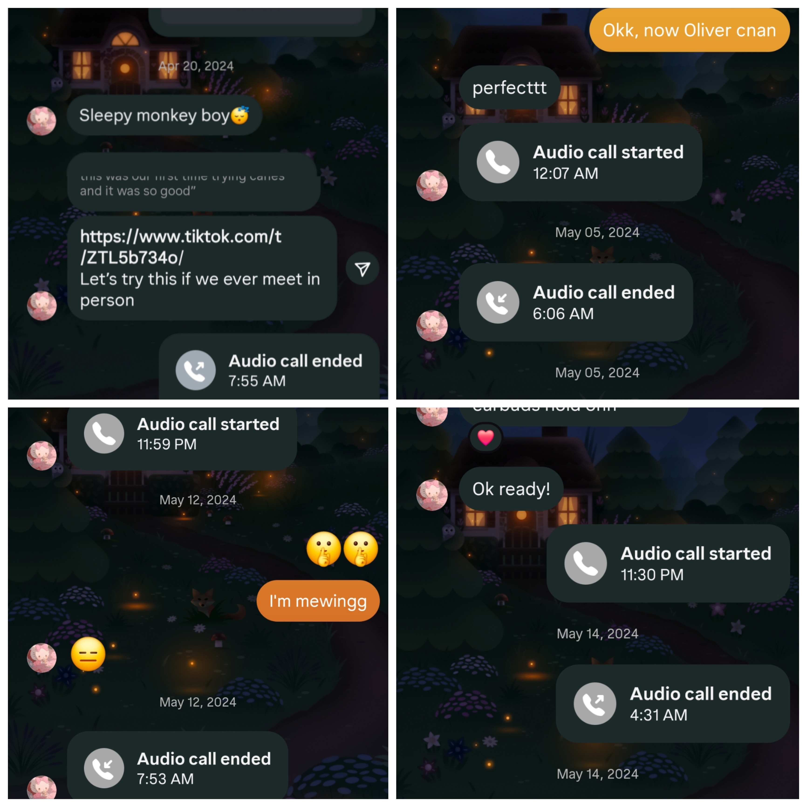
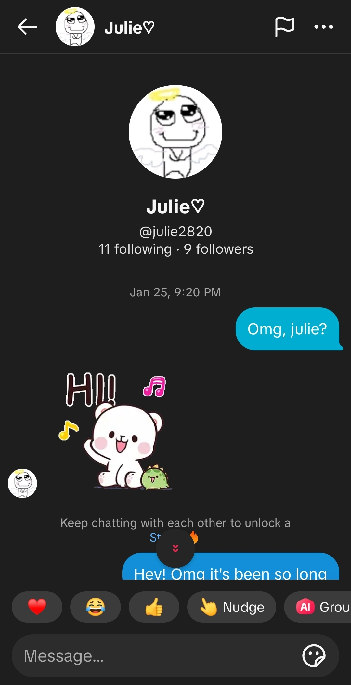

These photos all have significance of you,and they meant the world to me. Every time I look at them, it reminds me of how gentle, thoughtful, and loving you are. Even when you say so little, you say so much.

"This was one of the many gifts that you had made me. Along with others, even if I never got to see them all,
I know I would have loved them. Even now, I still remember the few tokens I ever got to see. In a way, others cry about the library of Alexandria,
but I have the mythical box, that held all of the gifts you made me.
I still remember, when I asked to see, your favorite photo of yourself, and you wonderingg why I would want to see it. Of course,
I always love seeing your beautiful smile, but I knew already that I was plotting on getting you this exact drawing. I still remember being so excited
to send you this photo, and regretting not sending you it during a call, because I wanted to hear your reaction haha. But for a time, this was one of the few photos,
that I had that reminded me of you.

You made these, and honestly? They stayed alive in my mind longer than most real flowers ever could. I still remember, when you showed me these,
and I couldn't help but be more excited and happy, with knowing that you willingly made these. But more importantly, they showed and truly reminded me of your kind and caring nature.

My favorite photo of you — soft smile, gentle hand, and eyes that never stopped being kind. This being the only photo of you, I held onto this one very closely, I remember, when my phone
stopped working, and I was so afraid that I would have lost this photo forever, thankfully I had it saved on a seperate app, but for a entire night, I was so afraid that I had lost one of few photos,
that I had to remind me, of you.

This may be one of my favorite photo. For how much time we always spent together, we always took very little photos, most of the time, just playing anf talking
in that moment. I still remember after you were gone, I would go on and play this game by myself, remembering the times where I would be jumping from roof to roof, just talking with you.
Remembering these moments, gets me teary eyed, as I remember the nights we used to have so much fun.

I remember when you were gone, I needed to find out, any way possible to know if you were okay. So for weeks, I had been joining your friends whenever they played on roblox.
Time after time, I would try but for whatever reason it would never work, until I finally ended up joining your friend, I believe they go by "gub", and I eventually met her and Cat, and in turned
it finally gave me a way to see if you would ever come back, and finally gave me something to look forward to.

This is more a mix of multiple photos and times, but its still a very fond time. During the times when it almost seemed we couldn't get enough of calling every single night.
Honestly for a time, being able to call you, play, and even sleep on call was one of the few things that I was always looking forward to. I remember always being so happy whenever we got to call, even if
it was pure silence, of course the talks we had, made these moments special, but none of it would have been possible if you weren't there.

Of course, im sure the context of this photo doesn't even need to be explained, but I still remember it vividly. I had jus gotten off of work, when Cat texted me, saying she had finally
heard back from you. I remember what felt like my heart stopping, it almost felt like a dream come true. Since one of the most important people, I ever met, finally came back. I was also happy,
I could keep my promise to you, that no matter what, no matter how long, i'd always wait for you.